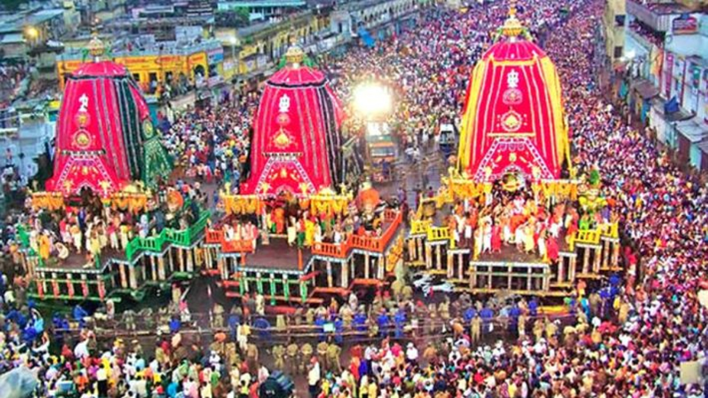
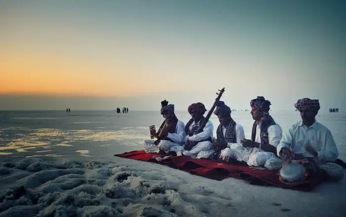

Gugarat:  Rath Yatra is one of the most awaited festivals in Gujarat and other parts of India, and it takes place majorly in four places including Jagannath in Ahmedabad (Gujarat). This sacred annual celebration’s main highlight is the procession that is led by an ornate chariot. The procession begins prior the Pahind Vidhi (cleaning the route for chariot), performed by the CM of Gujarat. The chariot and procession then make their way through different corners of the city.  This is among the main festivals in Gujarat. Rhythmic strums of ravanahatha, Gujarati men with legendary mustaches and pagris, and the sparkling white sand – the desert of Rann dons a festive avatar right when autumn is at its peak. Gujarat’s fascinating heritage takes the forefront at the Kutch festival of Gujarat. It is that much-awaited time of the year when people, regardless of where they live, come over for an extravagant experience of the main festival of Gujarat.